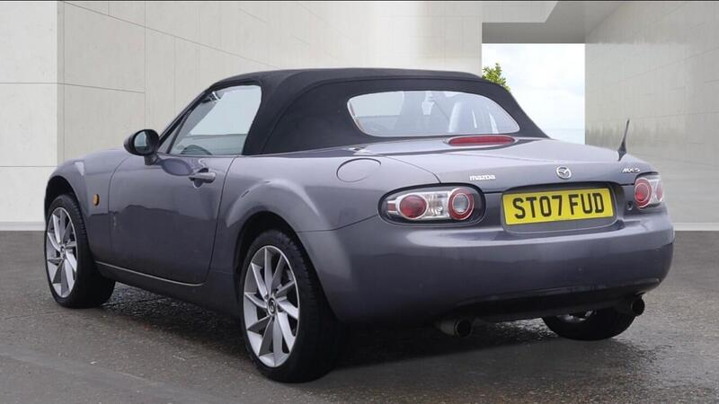
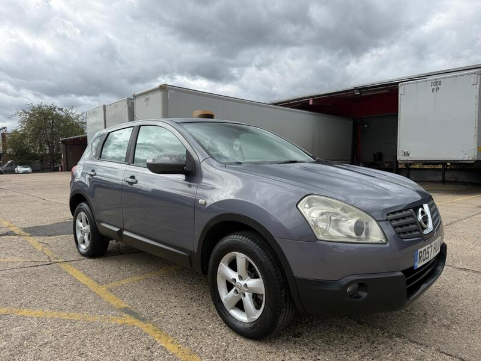
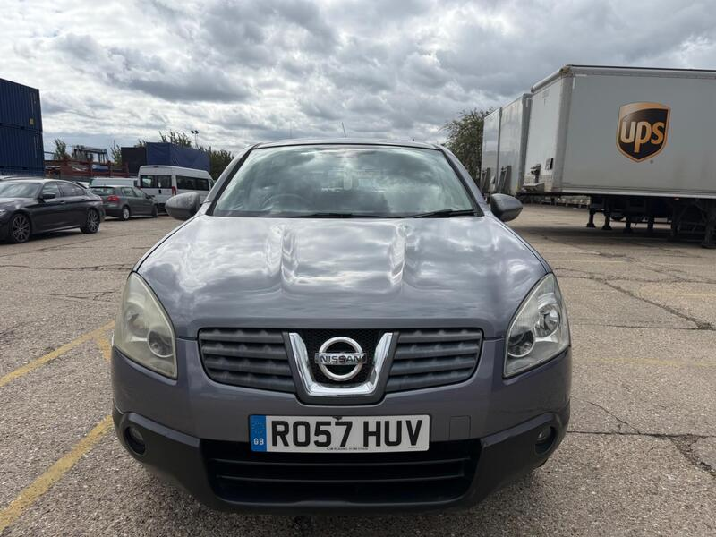
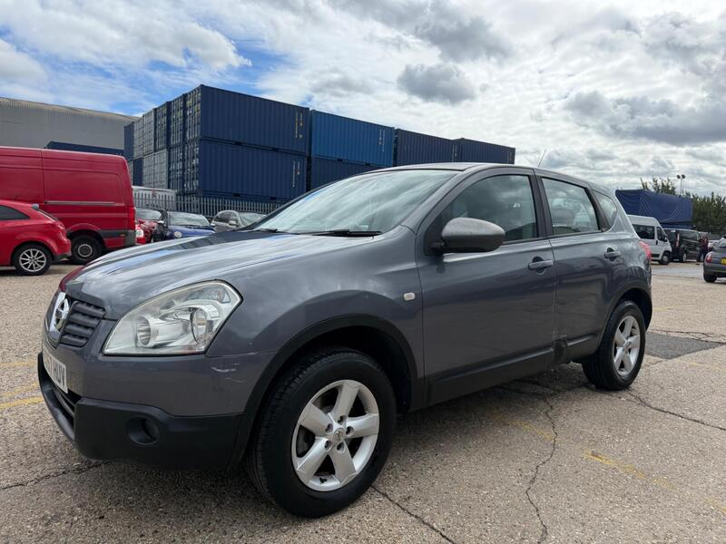

← All 50Ranked #12 of 50




Seller photos from the AutoTrader ad.
✓ Checked 15 Oct
2007 · Mazda MX-5
Mazda MX-5 1.8i
Low miles for the money. Needs a close look.
£2,50067,000 miles · Reading · 26 mi from GU7
View on AutoTrader ↗Key facts
| Price | £2,500 |
|---|---|
| Year | 2007 |
| Miles | 67,000 |
| Model | Mazda MX-5 1.8i |
| Colour | Grey |
| Registration | 2007 (07 reg) |
| Owners | 6 owners |
| Service history | Not stated |
| MOT (seller's text) | Not stated |
| Seller | Trade |
| Location | Reading |
| From GU7 | 26 mi (AutoTrader) |
| Checked | 15 October 2026 |
Why buy it
- 67k miles, warranted, HPI clear (ad)
- 2 keys
Things to check
Only a part service history
Short ad: check the MOT online and the rust underneath
- Mazda MX-5 NC / NB weak spots
Rear subframe, rear arches and sill ends; NB sills and chassis rails. Underseal can hide rot. Engine mostly bulletproof; timing-chain tensioner, seizing calipers, rear diff leaks, cracking coolant tank.
Seller says (extract)
“Hpi clear- warranted miles- starts and drives Superb- part service history- 2 keys…”